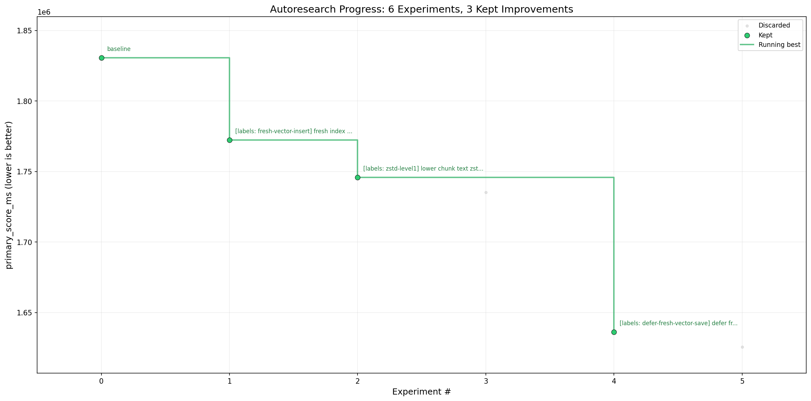

Linux Kernel Corpus
Cold indexing 10.6% faster
Autoresearch loop measured release build, forced cold index, cold query, hot semantic queries, and hot literal queries on a shallow Linux kernel checkout.
93,493indexed files
4,666,431chunks
1,636,222.96 msbest primary score
-10.62%primary score delta
Primary Score

| Metric | Baseline | Best retained | Delta |
|---|---|---|---|
| Primary score | 1,830,638.41 ms | 1,636,222.96 ms | -10.62% |
| Cold index | - | 1,635,412.43 ms | - |
| Cold query | - | 402.19 ms | - |
| Hot query p95 | - | 408.33 ms | - |
| Index size | - | 6,419.25 MB | - |
Cold, hot, and literal queries each returned 20 hits in the best retained run.
Retained Changes
- Added
scripts/bench_linux_kernel.pyto measure cold index/query and hot query paths. - Guarded
--bench-homeso cleanup only deletes child paths that resolve under/tmp. - Added Criterion benchmark
indexer_bulk/fresh_index_30k_chunks. - Changed chunk text compression from zstd level 3 to level 1.
- Reserved vector capacity during fresh indexing and used unchecked vector insert where duplicate keys cannot exist yet.
- Skipped periodic vector-file saves during fresh full indexing; final vector persistence still runs before index metadata is marked complete.
Validation
python3 -m py_compile scripts/bench_linux_kernel.pypython3 tests/test_bench_linux_kernel.pypython3 scripts/bench_linux_kernel.py --helppython3 scripts/bench_linux_kernel.py --kernel /home/bruno/githubworkspace/linux --samples 5cargo bench --bench indexer_bench indexer_bulk/fresh_index_30k_chunks -- --noplotcargo fmt --checkcargo clippy --all-targets -- -D warningscargo test --locked